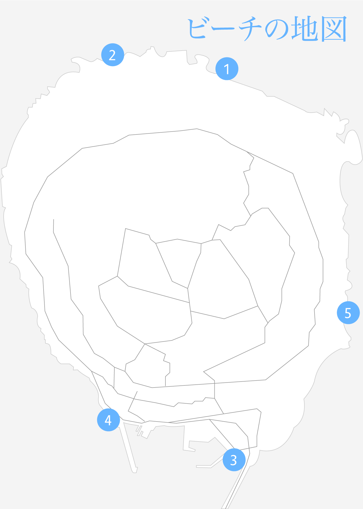

島のビーチ
古宇利島のビーチの地図です。

- トケイ浜（ポットホール）
- ティーヌ浜（ハートロック）
- 古宇利ビーチ
- チグヌ浜
- ソウヌ浜
各ビーチについて
トケイ浜（ポットホール）
自然の浜が複数広がっており、サンゴが残っているきれいなビーチです。干潮時以外は泳ぐことができ、鮮やかな熱帯魚を見ることができます。遠浅になってはいますが、リーフを越えると突然深くなるので要注意です。映画やドラマ、ミュージックビデオの撮影にもよく利用されています。
ティーヌ浜（ハートロック）
ハート型の岩があることからハートロックビーチと言われることもあります。とても美しい自然のビーチですが、ビーチに下りるまでの道が少し険しいので注意が必要です。
古宇利ビーチ
古宇利島の入り口すぐにある遠浅のビーチで、海水浴を楽しむ人で賑わっています。マリングッズのレンタルやシャワー、トイレ、駐車場と施設が充実。ビーチと古宇利大橋を背景にした記念撮影が人気です。
チグヌ浜
沖縄版「アダムとイブ」の言い伝えにある、彼らが暮らしていたとされる洞穴があるビーチです。砂浜が小さく、地元の住民が泳いでいることが多いのが特徴。海は深くなっているので、要注意です。
ソウヌ浜
潮が引いた時にだけ出てくるビーチで、観光客が来ることはほとんどありません。シュノーケリング向きのスポットで、釣り人がいることもあります。
沖縄への航空券予約おすすめ
じゃらんパック
DeNAトラベル
skyticket.jp
格安航空券センター
沖縄の宿予約おすすめ
じゃらん
Yahoo!トラベル
Relux
yoyaQ.com
トクー！
日本旅行
沖縄のレンタカー予約おすすめ
ニッポンレンタカー
じゃらんレンタカー